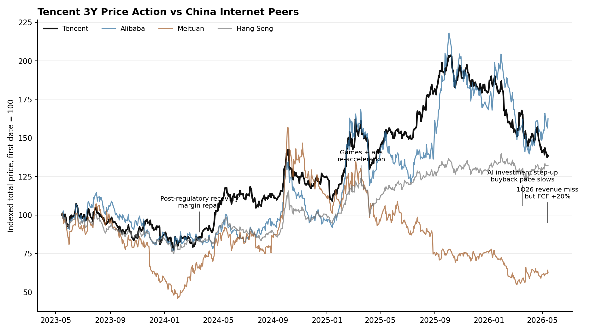
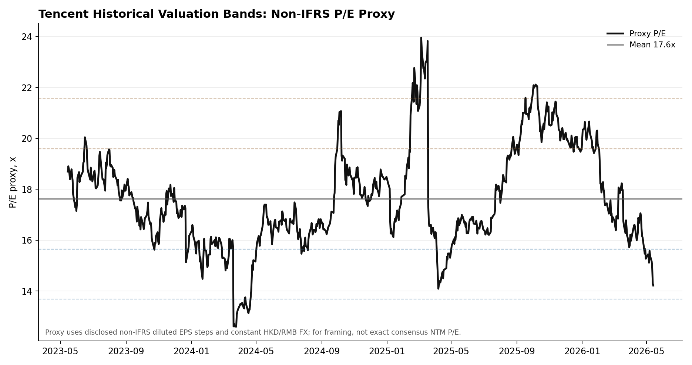
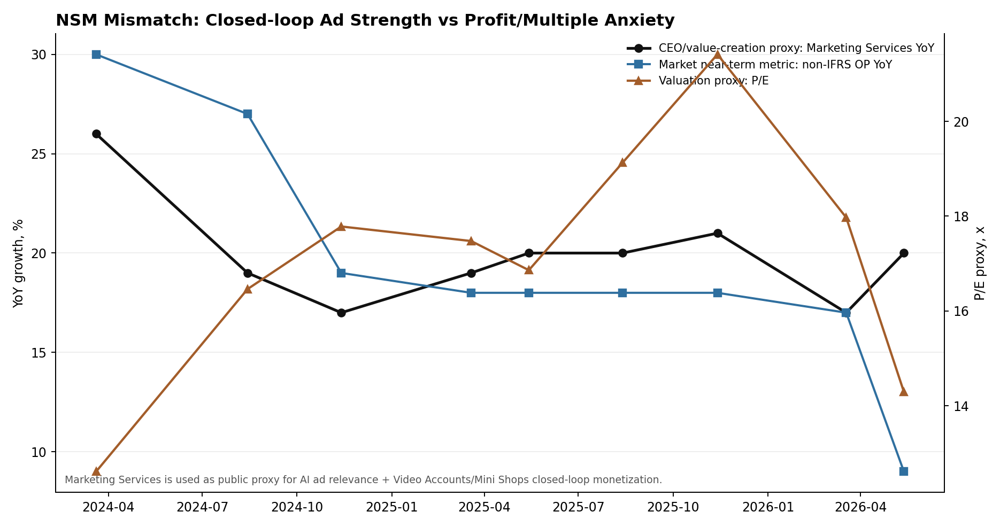

Ticker: 0700.HK / TCEHY
Date: 2026-05-14
Classification: Advance to next-stage research
结论：值得进入下一阶段研究。 腾讯不是一个单纯“便宜的中国互联网龙头”故事，而是一个可能存在错误锚定的故事：市场短期把问题锚在 AI 投入导致的利润率、CapEx 和回购节奏压力上；但公司正在把 AI 首先嵌入广告、游戏、视频号、小店、云和微信工作流，真正应观察的长期 NSM 是“微信生态内的闭环商业化和 AI 代理带来的可持续现金流扩张”。
1Q26 表面上收入 1,964.6 亿元人民币、同比 +9%，略低于市场预期；但毛利 +11%、FCF +20% 至 567 亿元、净现金 +63% 至 1,469 亿元，说明核心业务仍在产现金。争议点在于新 AI 产品拖累：剔除 Hy、元宝、CodeBuddy、WorkBuddy、QClaw 等新 AI 产品，非 IFRS 经营利润同比 +17%、经营利润率 43.0%；合并口径非 IFRS 经营利润仅 +9%、利润率 38.5%。这正是 mispricing 的观察窗口。
| Item | Latest Situation |
|---|---|
| Market Data & Positioning | 0700.HK 收盘价约 HK$460.2；52周区间 HK$454 - HK$683；市值约 4,159bn HKD。OpenBB/yfinance 报价显示股价低于 50日均线约 HK$501、200日均线约 HK$580，仍处下行技术结构。 |
| Key Financial Metrics | 1Q26 收入 1,964.6 亿元人民币，同比 +9%；毛利率 57%；非 IFRS 经营利润 756.3 亿元，同比 +9%；剔除新 AI 产品后非 IFRS 经营利润 844 亿元，同比 +17%；FCF 567 亿元，同比 +20%；1Q 回购约 1270 万股、金额 HK$76 亿元。 |
| Price Action & Technicals | 30日 RSI 约 38，MACD 仍在零轴下方但柱状图亏损收窄；布林带宽从 4月中旬低点扩张，说明波动释放后仍未形成明确反转。技术层更像“基本面需要催化”的等待区，而不是动量买点。 |
| Positioning | Prosus/Naspers 官方仍执行开放式回购并定期小额卖出腾讯以回购自身股份；这形成持续供给扰动，但 Prosus 同时声明仍会保持腾讯大股东身份并看好长期前景。腾讯自身 2025 年回购 HK$800 亿元，2026 年因 AI 投入预计回购额低于 2025。 |
| Key Metric | Value | Implication |
|---|---|---|
| Weixin/WeChat MAU | 14.32亿 | 用户层仍是中国消费互联网的操作系统级入口，MAU 只小幅增长，但生态深度比用户数更重要。 |
| Marketing Services | 1Q26 +20% YoY | AI 广告模型、AIM+、视频号和小店闭环转化仍是最直接的价值捕获代理指标。 |
| Business Services | 1Q26 +20% YoY | 云收入受 AI 需求、价格环境和小店技术服务费推动，正在从低质项目转向利润化增长。 |
| FCF | RMB 56.7bn | 即便 AI CapEx 增加，核心业务仍能自融资；关键是未来 4-6 个季度能否维持。 |
Pricing Anchor & Embedded Expectations: 当前市场锚点更接近 2026 年 P/E 与非 IFRS 经营利润率纪律。卖方片段显示摩根士丹利目标价 HK$650 对应 2026E P/E 约 19x、现价约 15x；野村目标价 HK$727；高盛以 SOTP 给 HK$770。也就是说，买方真正要判断的是：腾讯应被看作“AI 投入压利润的中国互联网公司”，还是“微信闭环商业化 + 全球游戏现金流 + AI 代理选项”的 SOTP/FCF 复合体。
| Company | Market Cap | Forward P/E | EV/Sales | Revenue Growth | Profit Margin |
|---|---|---|---|---|---|
| Tencent | 4,159bn HKD | 11.8x | 5.5x | 9.1% | 30.6% |
| Alibaba | 2,647bn HKD | 13.4x | 2.4x | 2.9% | 10.1% |
| Meituan | 529bn HKD | 16.0x | 1.2x | 2.8% | -6.4% |
| NetEase | $76bn | 11.7x | 2.0x | 3.0% | 30.0% |
| Meta | $1,565bn | 17.0x | 7.3x | 33.1% | 32.8% |
同业表的信号不是“腾讯绝对便宜”这么简单，而是腾讯以接近 NetEase 的 forward P/E 交易，却拥有更复杂的广告、支付、云、微信生态与 AI 代理选项；折价是否合理，取决于监管/中国折价与 AI ROI 的证伪速度。



NSM Framework:
| Lens | Assessment |
|---|---|
| CEO NSM | AI 提升核心产品价值与生态活跃：视频号时长、小店 GMV、AIM+广告预算占比、游戏 DAU/流水、元宝/WorkBuddy 留存。公开代理指标是 Marketing Services 增速、视频号时长 +20%、小店 GMV 快速增长。 |
| Long-term investor NSM | 生态内闭环商业活动强度：微信生态 GMV/交易笔数 × 支付渗透 × 商户和服务供给深度；最终落到广告 eCPM/点击率、游戏长线流水、云利润化、FinTech 风险调整后利润、FCF 转化率。 |
| Market-consensus NSM | 非 IFRS 经营利润增速、利润率、AI CapEx/Opex 强度和回购规模。1Q26 的短期市场惩罚集中在收入 miss、AI 投入、回购放缓。 |
| Mismatch category | Healthy lag，带有执行风险。 CEO NSM 和长期 NSM 正在改善，但市场要求先看到 AI 投入转化为利润和 FCF；若 2026 下半年仍只见投入不见留存/收入，健康滞后会转成 dangerous divergence。 |
微信/游戏/内容/支付的用户价值 → 视频号、小店、小游戏、AI助手和企业工具中的更高频行为 → 商家和开发者把交易、投放、客服、生产工作流迁入微信生态 → 闭环数据与社交关系形成组织依赖 → 广告定价、云/工具订阅、游戏长线流水、支付/金融科技利润和 FCF
Upside/Downside Asymmetry: 如果市场继续用 15x 左右 P/E 锚定“利润率被 AI 稀释”，而腾讯证明新 AI 投入可以通过广告闭环、游戏生产、云和 WorkBuddy/Yuanbao 留存产生现金流，则从 15x 回到 19-21x 加上中高个位数至低双位数 EPS 复合增长，2-3 年回报空间足够进入下一阶段。下行主要来自监管折价、AI ROI 不清、游戏新品周期掉头和 Prosus 供给压制。
Classification: Advance to next-stage research.
Wrong anchor: 条件基本满足。市场正在用“AI 投入压利润 + 中国风险 + 回购下降”的利润率框架定价，而更合理的研究框架应拆成核心现金牛、自研游戏/广告闭环、云利润化、微信 AI 代理期权和投资资产五块。
Material upside: 条件满足但需要建模。卖方目标价区间 HK$650-770 相对 HK$460 附近现价有明显空间；但要确认该空间不是单纯 sell-side optimistic bias，下一步必须做分部 SOTP 与 FCF 情景。
Clear validation path: 条件满足。接下来 2-4 个季度可用广告增速、AIM+占比、小店 GMV/技术服务费、云收入与利润、AI 产品 DAU/留存、CapEx/FCF 转化和回购节奏来证伪。
Confirming datapoints
Breaking datapoints
../collected_resources/Tencent-1Q2026-results.pdf
; official URL:
https://static.www.tencent.com/uploads/2026/05/13/47382ae415a209fd161bc19a1f9b3704.pdf
../collected_resources/Tencent-FY2025-4Q2025-results.pdf
,
../collected_resources/Tencent-2025-annual-report.pdf
../collected_resources/earnings_calls/
../collected_resources/20260514_tencent_sellside_search_snippets.md
,
../collected_resources/primary_sources_index.md
../collected_resources/podwise_tencent_2026.md
../collected_resources/20260114_fundaai_ai_competition_ali_bytedance_tencent.md
,
../collected_resources/20260205_robonomics_china_llm_deep_dive_202602.md
,
../collected_resources/20260121_mobiledevmemo_humanity_scale_wechat_monetization.md
,
../collected_resources/20251201_robonomics_os_agent_wechat_ecosystem_context.md
,
../collected_resources/20251219_robonomics_micro_drama_impact_tencent_video.md
../collected_resources/tencent_technical_30d.csv
,
../collected_resources/yfinance_peer_market_summary_20260514.json
,
../collected_resources/tencent_peer_3y_prices.csv